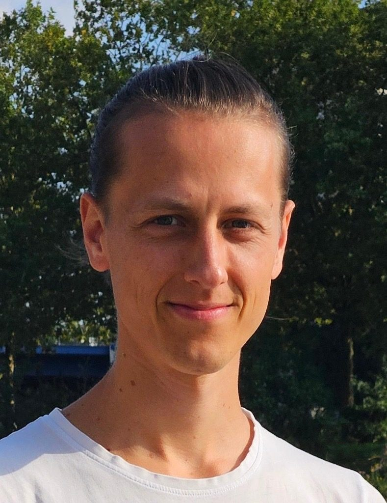
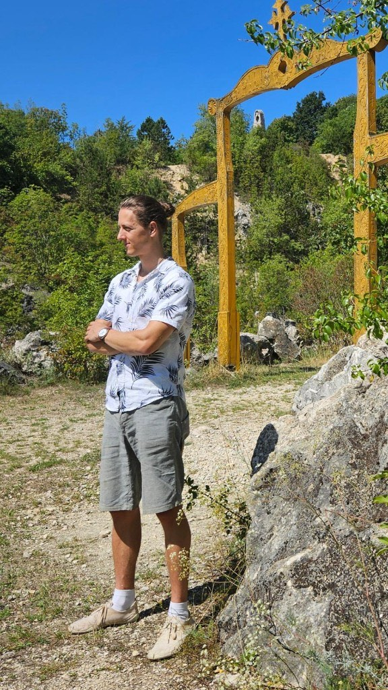

Über mich
Hi, ich heiße Daniel.
Nach einem langen Weg zu einer glücklichen Beziehung zu mir selbst habe ich mich entschieden, das weiterzugeben, was mir jahrelang am meisten gefehlt hat: eine echte, aufrichtige Selbstliebe und den Glauben an sich selbst.
Selbstliebe ist das warme Gefühl, das in mir aufsteigt, wenn ich am Leben teilnehme — wenn ich an mich denke, an meine Beziehungen, meine Erfahrungen, und wer ich bin.
Ich bin zutiefst davon überzeugt, dass jeder Mensch in seinem Kern einen wertvollen Schatz trägt. Die Frage ist nur, ob wir in der Lage sind, diesen Wert in uns selbst zu sehen.
Viele Menschen halten ihre Stärken für selbstverständlich und verurteilen sich für ihre Schwächen. Sie glauben, durch harte Arbeit verdienen sie sich ihren Wert. Uns wurde beigebracht, wie wir sein müssen, um liebenswert zu sein — und so setzen wir uns eine Maske auf.
Was wir brauchen: mehr Selbstliebe.

Der Weg
Ein Leben in Unsicherheit und Selbstzweifel.
Mehrere Jahre fühlte ich mich festgefahren. Ich war nicht zufrieden, wo ich war, und spürte Widersprüche in mir, die ich mir nicht erklären konnte. In manchen Situationen fühlte ich mich hilflos, schwach und unterlegen. Ich wollte das nicht wahrhaben und flüchtete in Zocken, Spaß und Vergnügen.
Eines Tages geschahen ein paar einschneidende Ereignisse, die mich geschüttelt haben: Wach auf. Erkenne, wovor du dich schon lange verschließt. Ändere die Dinge, von denen du weißt, dass sie sich nicht richtig anfühlen.
Mit einer neuen Perspektive krempelte ich mein Leben um. Ich hing den Job als Versicherungskaufmann an den Nagel, zog aus meiner Wohnung aus und startete noch einmal neu.
Auf dem Weg durfte ich lernen, wie unser Bewusstsein funktioniert, wie Gedanken mit Gefühlen zusammenhängen — und wie sich gewohnte Gedankengänge zu Glaubensmustern formen.
Was ich über mich glaube, entscheide nur ich selbst. Und so stand ich auf und begann, Verantwortung zu übernehmen.
Zusammenarbeit
Wie ist die Arbeit mit mir?
Mir wird oft gesagt, dass ich eine besondere Ruhe ausstrahle — eine, die Raum öffnet, sich mit sich selbst zu verbinden.
Ich höre gerne zu und möchte wissen, was den Menschen vor mir wirklich berührt. Wer bist du hinter dem äußeren Erscheinungsbild, wenn du alle Anspannung loslassen darfst?
Auf mentaler Ebene geht es darum, unterbewusste Glaubenssätze und Selbstbilder zu erkennen und zu verändern. Je nachdem, wo du stehst, kommen verschiedene Werkzeuge zum Einsatz — vom klaren Gespräch bis zur Arbeit auf einer tief emotionalen Ebene.
Da jeder Mensch anders ist, arbeite ich intuitiv und individuell. Und alles, was wir besprechen, bleibt unter uns.

Ausbildungen
Womit ich arbeite.
- Psychologischer Berater2020–2023 · SGD Darmstadt
- Soul Master Mind2023 · Maxim Mankevic
- Kahi Life Coach2025 · Tom Peter Rietdorf
- Releasinglaufend · Andre Höfer
- Coaching-Seminar Basis2022 · SGD Darmstadt
- Kognitive Methoden2022 · SGD Darmstadt
- Lösungsorientiertes Coaching2022 · SGD Darmstadt
- Energetische Wirbelsäulenaufrichtung2025 · Tom Peter Rietdorf
- Medialitäts-Seminar2025 · Tom Peter Rietdorf
Der nächste Schritt
Lass uns sprechen.
Ein kostenloses, unverbindliches Gespräch. Wir schauen, wo du gerade stehst und wo du noch nicht in deiner Kraft lebst.